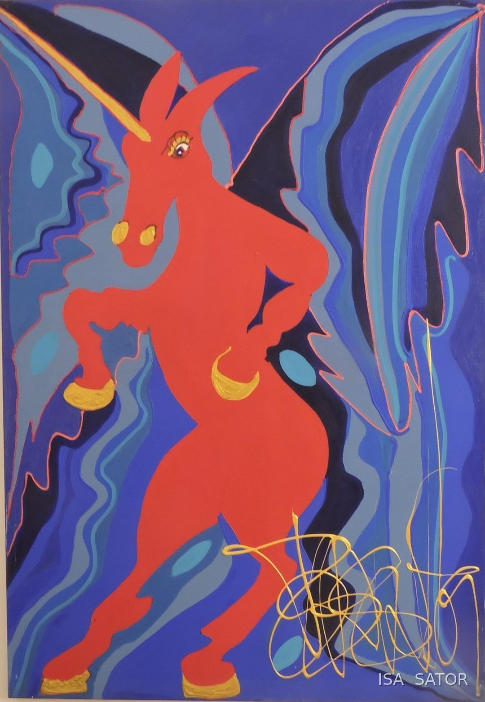

Isa Sator donne à ses couleurs des correspondances émotionnelles et vibratoires. Ici, on les prend au mot : chaque couleur de la toile a sa voix. Promenez le doigt, ou la souris, sur la peinture.

« Je lui donne des correspondances émotionnelles, vibrationnelles et symboliques. »
« Le rouge, pour moi, c'est la passion ; le jaune, la fulgurance. »
Isa Sator
Sur iPhone, désactivez le mode silencieux (le petit bouton sur le côté) pour entendre le son. Essai de démonstration, non relié au site.